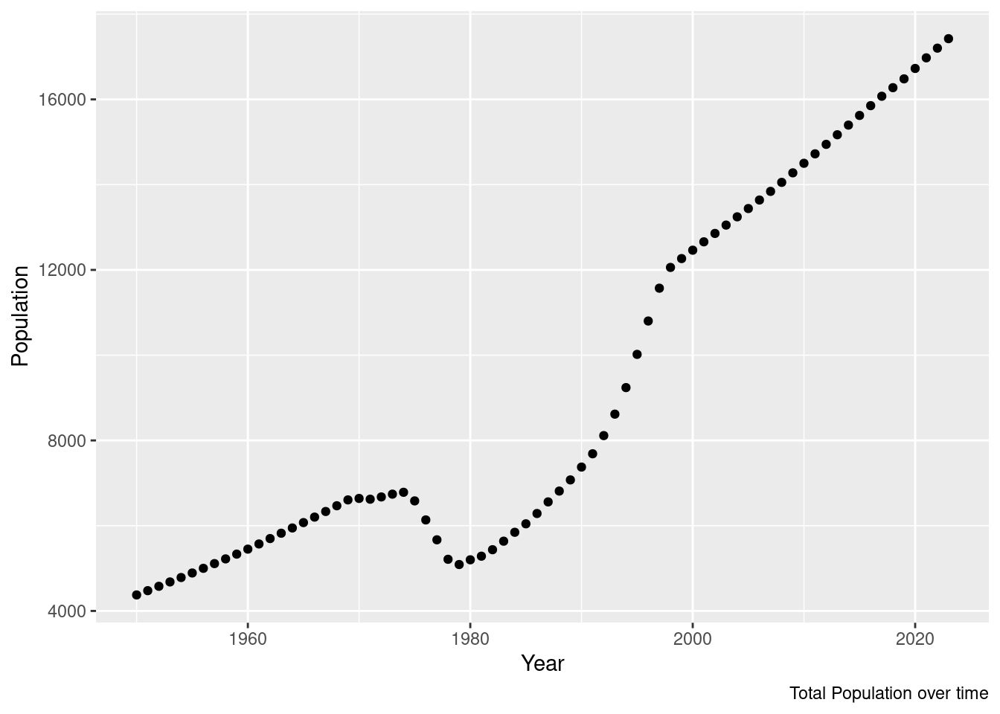
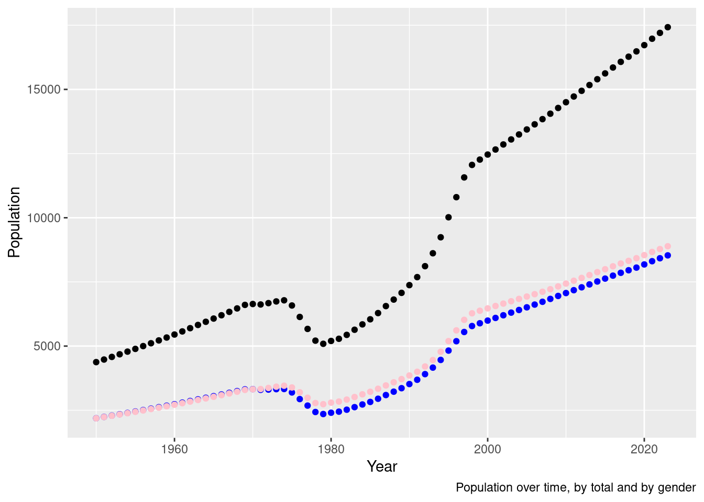
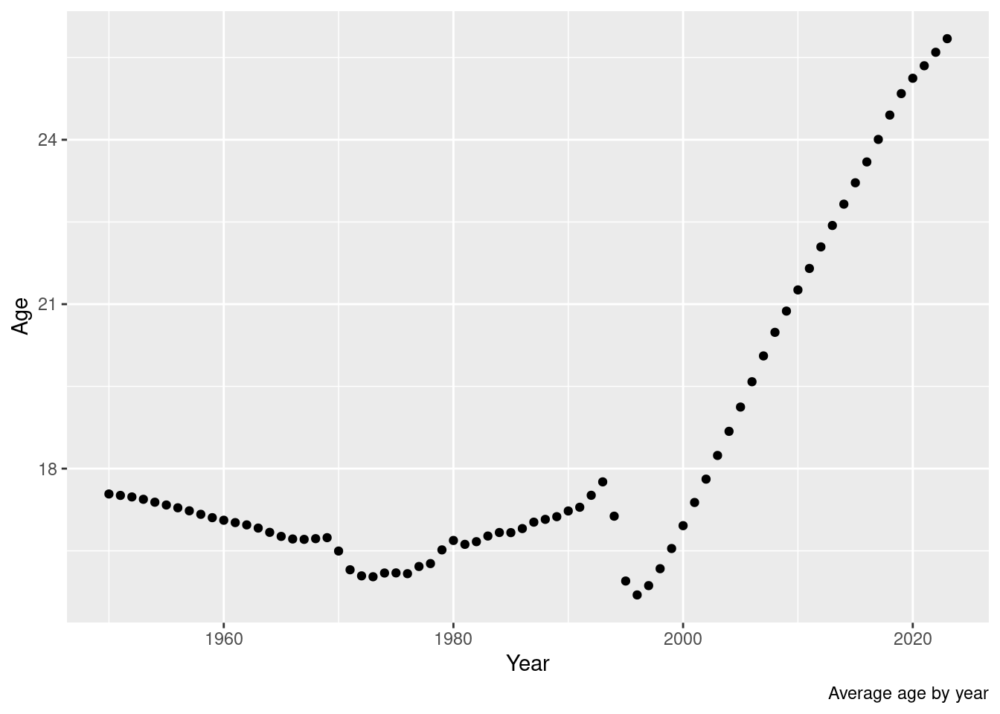
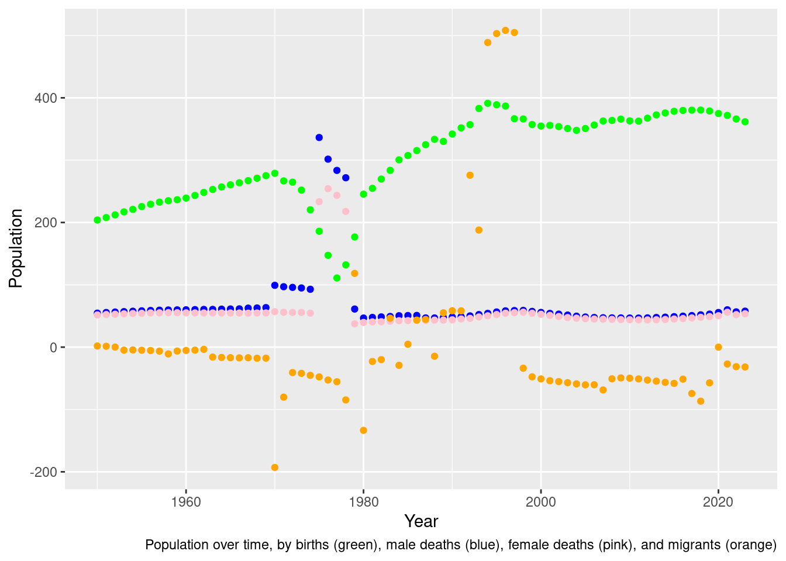
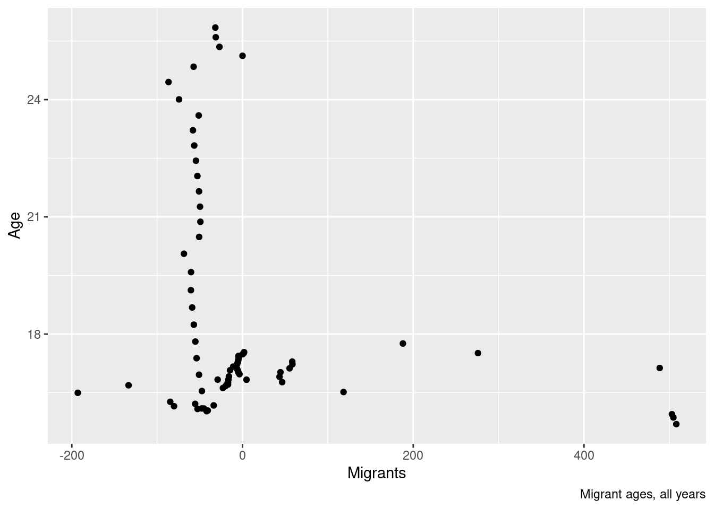

# import csv
population <-read.csv("../../../../data/population.csv")
library(dplyr)
library(ggplot2)
library(tidyverse)Population: Presentation for R training
R
25Winter
data: population.csv
Population: the data set
The population dataset contains detailed population data (21983 observations) across 59 variables, including region, population, growth rate, births, deaths, and fertility over a wide year range. It also includes data on migration. Many of the variables are gender disaggregated.
Research aim
The aim of this project is to explore how the population varies over time in Cambodia, including differences between men and women.
Step 1: Import, explore and cut-down data set
First, I imported the data set and libraries.
Second, I explore regions, viewing just the output.
[1] "World"
[2] "Sustainable Development Goal (SDG) regions"
[3] "Sub-Saharan Africa"
[4] "Northern Africa and Western Asia"
[5] "Central and Southern Asia"
[6] "Eastern and South-Eastern Asia"
[7] "Latin America and the Caribbean"
[8] "Oceania (excluding Australia and New Zealand)"
[9] "Australia/New Zealand"
[10] "Europe and Northern America"
[11] "Europe, Northern America, Australia, and New Zealand"
[12] "UN development groups"
[13] "More developed regions"
[14] "Less developed regions"
[15] "Least developed countries"
[16] "Less developed regions, excluding least developed countries"
[17] "Less developed regions, excluding China"
[18] "Land-locked Developing Countries (LLDC)"
[19] "LLDC: Africa"
[20] "LLDC: Asia"
[21] "LLDC: Europe"
[22] "LLDC: Latin America"
[23] "Small Island Developing States (SIDS)"
[24] "SIDS Caribbean"
[25] "SIDS Pacific"
[26] "SIDS Atlantic, Indian Ocean and South China Sea (AIS)"
[27] "World Bank income groups"
[28] "High-and-upper-middle-income countries"
[29] "Low-and-Lower-middle-income countries"
[30] "High-income countries"
[31] "Low-and-middle-income countries"
[32] "Middle-income countries"
[33] "Upper-middle-income countries"
[34] "Lower-middle-income countries"
[35] "Low-income countries"
[36] "No income group available"
[37] "Geographic regions"
[38] "Africa"
[39] "Eastern Africa"
[40] "Burundi"
[41] "Comoros"
[42] "Djibouti"
[43] "Eritrea"
[44] "Ethiopia"
[45] "Kenya"
[46] "Madagascar"
[47] "Malawi"
[48] "Mauritius"
[49] "Mayotte"
[50] "Mozambique"
[51] "Réunion"
[52] "Rwanda"
[53] "Seychelles"
[54] "Somalia"
[55] "South Sudan"
[56] "Uganda"
[57] "United Republic of Tanzania"
[58] "Zambia"
[59] "Zimbabwe"
[60] "Middle Africa"
[61] "Angola"
[62] "Cameroon"
[63] "Central African Republic"
[64] "Chad"
[65] "Congo"
[66] "Democratic Republic of the Congo"
[67] "Equatorial Guinea"
[68] "Gabon"
[69] "Sao Tome and Principe"
[70] "Northern Africa"
[71] "Algeria"
[72] "Egypt"
[73] "Libya"
[74] "Morocco"
[75] "Sudan"
[76] "Tunisia"
[77] "Western Sahara"
[78] "Southern Africa"
[79] "Botswana"
[80] "Eswatini"
[81] "Lesotho"
[82] "Namibia"
[83] "South Africa"
[84] "Western Africa"
[85] "Benin"
[86] "Burkina Faso"
[87] "Cabo Verde"
[88] "Côte d'Ivoire"
[89] "Gambia"
[90] "Ghana"
[91] "Guinea"
[92] "Guinea-Bissau"
[93] "Liberia"
[94] "Mali"
[95] "Mauritania"
[96] "Niger"
[97] "Nigeria"
[98] "Saint Helena"
[99] "Senegal"
[100] "Sierra Leone"
[101] "Togo"
[102] "Asia"
[103] "Central Asia"
[104] "Kazakhstan"
[105] "Kyrgyzstan"
[106] "Tajikistan"
[107] "Turkmenistan"
[108] "Uzbekistan"
[109] "Eastern Asia"
[110] "China"
[111] "China, Hong Kong SAR"
[112] "China, Macao SAR"
[113] "China, Taiwan Province of China"
[114] "Dem. People's Republic of Korea"
[115] "Japan"
[116] "Mongolia"
[117] "Republic of Korea"
[118] "Southern Asia"
[119] "Afghanistan"
[120] "Bangladesh"
[121] "Bhutan"
[122] "India"
[123] "Iran (Islamic Republic of)"
[124] "Maldives"
[125] "Nepal"
[126] "Pakistan"
[127] "Sri Lanka"
[128] "South-Eastern Asia"
[129] "Brunei Darussalam"
[130] "Cambodia"
[131] "Indonesia"
[132] "Lao People's Democratic Republic"
[133] "Malaysia"
[134] "Myanmar"
[135] "Philippines"
[136] "Singapore"
[137] "Thailand"
[138] "Timor-Leste"
[139] "Viet Nam"
[140] "Western Asia"
[141] "Armenia"
[142] "Azerbaijan"
[143] "Bahrain"
[144] "Cyprus"
[145] "Georgia"
[146] "Iraq"
[147] "Israel"
[148] "Jordan"
[149] "Kuwait"
[150] "Lebanon"
[151] "Oman"
[152] "Qatar"
[153] "Saudi Arabia"
[154] "State of Palestine"
[155] "Syrian Arab Republic"
[156] "Türkiye"
[157] "United Arab Emirates"
[158] "Yemen"
[159] "Europe"
[160] "Eastern Europe"
[161] "Belarus"
[162] "Bulgaria"
[163] "Czechia"
[164] "Hungary"
[165] "Poland"
[166] "Republic of Moldova"
[167] "Romania"
[168] "Russian Federation"
[169] "Slovakia"
[170] "Ukraine"
[171] "Northern Europe"
[172] "Denmark"
[173] "Estonia"
[174] "Faroe Islands"
[175] "Finland"
[176] "Guernsey"
[177] "Iceland"
[178] "Ireland"
[179] "Isle of Man"
[180] "Jersey"
[181] "Latvia"
[182] "Lithuania"
[183] "Norway"
[184] "Sweden"
[185] "United Kingdom"
[186] "Southern Europe"
[187] "Albania"
[188] "Andorra"
[189] "Bosnia and Herzegovina"
[190] "Croatia"
[191] "Gibraltar"
[192] "Greece"
[193] "Holy See"
[194] "Italy"
[195] "Kosovo (under UNSC res. 1244)"
[196] "Malta"
[197] "Montenegro"
[198] "North Macedonia"
[199] "Portugal"
[200] "San Marino"
[201] "Serbia"
[202] "Slovenia"
[203] "Spain"
[204] "Western Europe"
[205] "Austria"
[206] "Belgium"
[207] "France"
[208] "Germany"
[209] "Liechtenstein"
[210] "Luxembourg"
[211] "Monaco"
[212] "Netherlands"
[213] "Switzerland"
[214] "Americas"
[215] "Caribbean"
[216] "Anguilla"
[217] "Antigua and Barbuda"
[218] "Aruba"
[219] "Bahamas"
[220] "Barbados"
[221] "Bonaire, Sint Eustatius and Saba"
[222] "British Virgin Islands"
[223] "Cayman Islands"
[224] "Cuba"
[225] "Curaçao"
[226] "Dominica"
[227] "Dominican Republic"
[228] "Grenada"
[229] "Guadeloupe"
[230] "Haiti"
[231] "Jamaica"
[232] "Martinique"
[233] "Montserrat"
[234] "Puerto Rico"
[235] "Saint Barthélemy"
[236] "Saint Kitts and Nevis"
[237] "Saint Lucia"
[238] "Saint Martin (French part)"
[239] "Saint Vincent and the Grenadines"
[240] "Sint Maarten (Dutch part)"
[241] "Trinidad and Tobago"
[242] "Turks and Caicos Islands"
[243] "United States Virgin Islands"
[244] "Central America"
[245] "Belize"
[246] "Costa Rica"
[247] "El Salvador"
[248] "Guatemala"
[249] "Honduras"
[250] "Mexico"
[251] "Nicaragua"
[252] "Panama"
[253] "South America"
[254] "Argentina"
[255] "Bolivia (Plurinational State of)"
[256] "Brazil"
[257] "Chile"
[258] "Colombia"
[259] "Ecuador"
[260] "Falkland Islands (Malvinas)"
[261] "French Guiana"
[262] "Guyana"
[263] "Paraguay"
[264] "Peru"
[265] "Suriname"
[266] "Uruguay"
[267] "Venezuela (Bolivarian Republic of)"
[268] "Northern America"
[269] "Bermuda"
[270] "Canada"
[271] "Greenland"
[272] "Saint Pierre and Miquelon"
[273] "United States of America"
[274] "Oceania"
[275] "Australia"
[276] "New Zealand"
[277] "Melanesia"
[278] "Fiji"
[279] "New Caledonia"
[280] "Papua New Guinea"
[281] "Solomon Islands"
[282] "Vanuatu"
[283] "Micronesia"
[284] "Guam"
[285] "Kiribati"
[286] "Marshall Islands"
[287] "Micronesia (Fed. States of)"
[288] "Nauru"
[289] "Northern Mariana Islands"
[290] "Palau"
[291] "Polynesia"
[292] "American Samoa"
[293] "Cook Islands"
[294] "French Polynesia"
[295] "Niue"
[296] "Samoa"
[297] "Tokelau"
[298] "Tonga"
[299] "Tuvalu"
[300] "Wallis and Futuna Islands" Third, I limited the data file to Cambodia by creating a new object.
Fourth, I limited the variables in the new object to those of interest for the research questions, by using a self referential selection on the object.
Step 2: Make the data set more user friendly
As I worked with the new data set, I simplified the icky variable names by defining a new set of names
new_names <- c("Year", "TotalPop", "Age", "Migrants", "Males", "Females", "Births", "Dead_men", "Male_expect", "Dead_women", "Female_expect")
colnames(Population_cam) <- new_names Step 3: Data analysis
Population over time
This analysis below clearly shows the impact of the civil war and genocide on the Cambodian population.
ggplot (Population_cam,
aes (x = Year, y = TotalPop)) +
geom_point() +
labs (caption = "Total Population over time", x = "Year", y = "Population")
A comparison of males (blue) and females (pink) shows that the male population was more strongly affected and has yet to recover. While we would typically expect some skewing in the number of men based on female biased gender ratios (global pattern), Cambodia’s gender ratio is outside of usual ranges, due to the gendered impact of civil war and genocide on men (NIS 2019).
ggplot (Population_cam,
aes (x = Year, y = TotalPop)) +
geom_point(aes(y = Males), colour="blue") +
geom_point(aes(y = TotalPop), colour="black") +
geom_point(aes(y = Females), colour = "pink") +
labs (caption = "Population over time, by total and by gender", x = "Year", y = "Population")
Average age over time
Given the total population changes, we would expect that average ages would change around the years of decline and incline in population, to reflect births / deaths and their impact on the age structure of the population.
This scatterplot was drawn to investigate. It illustrates the expected dip in average age during the civil war and genocide in the 1970s (which adversly affected older generations). However, it also illustrates a significant decline in age in the mid-1990s. This, with reasonably stable population change could mean either both a jump in deaths of older people and a jump in birth rate, or alternatively, a massive influx of younger migrants. If neither are true, then there is a data error in the base data set.
ggplot (Population_cam,
aes (x = Year, y = Age)) +
geom_point()+
labs (caption = "Average age by year", x = "Year", y = "Age")
This analysis indicates unusual patterns in the orange line - migrants - driving the age changes seen in the 1990s
ggplot (Population_cam,
aes (x = Year, y = TotalPop)) +
geom_point(aes(y = Births), colour="green") +
geom_point(aes(y = Dead_men), colour="blue") +
geom_point(aes(y = Dead_women), colour = "pink") +
geom_point (aes(y = Migrants), colour = "orange")+
labs (caption = "Population over time, by births (green), male deaths (blue), female deaths (pink), and migrants (orange)", x = "Year", y = "Population")
Its next worth checking the average age of migrants to see if this might be the case - we can check summary (where we see the average number is low), and then by age, where we see emmigration (negative migration in the graph) is older people, and higher levels of immigration (positive migration) likely to cause the blip are younger people <5 years of age. In reality, it is highly unlikely that a sudden influx of infants without adults occured.
summary (Population_cam$Migrants) Min. 1st Qu. Median Mean 3rd Qu. Max.
-193.008 -52.841 -21.504 7.204 -3.800 508.187 ggplot(Population_cam,
aes(x = Migrants, y = Age)) +
geom_point()+
labs (caption = "Migrant ages, all years")
We could also run an linear model to see the extent to which variation in the population over time correlates with each of migration, male deaths, female deaths, and births.
Migrants - poor explanation
[1] 0.005408874Births - explains significantly more
[1] 0.6376123Male deaths - poor explanation
[1] 0.05946311Female deaths - poor explanation
[1] 0.04332331A covariance shows strong correlation.
cov (Population_cam$Year, Population_cam$TotalPop)[1] 86095.7Conclusion
In this dataset, it appears that Births are a better predicter of total population than any other factor.
This analysis has identified what appears to be an issue with the migrant age data for some years, given a lack of reasoning for why large numbers of young people would be comming across the border; this is most likely a data recording issue for age of migrants.